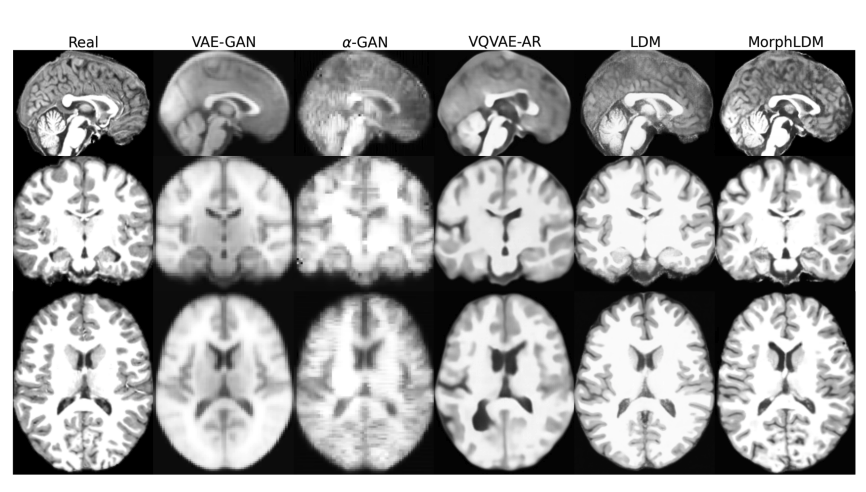
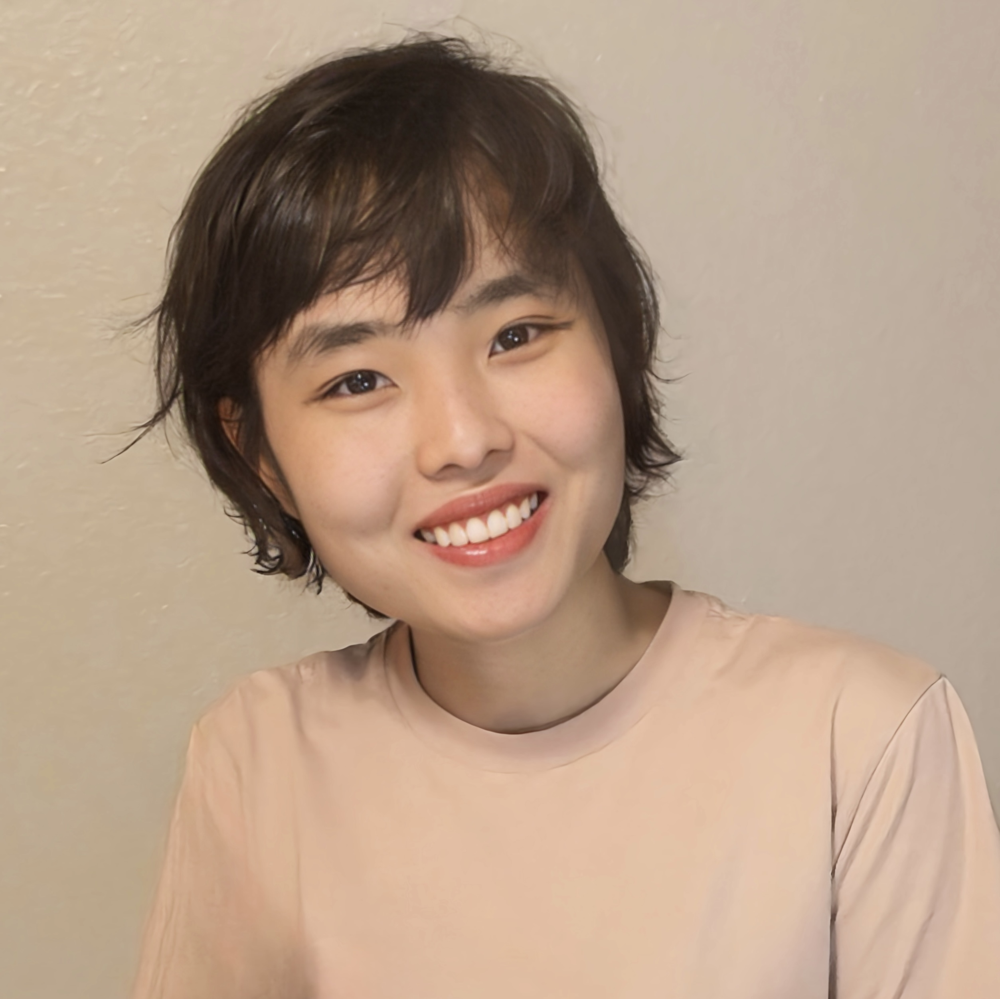
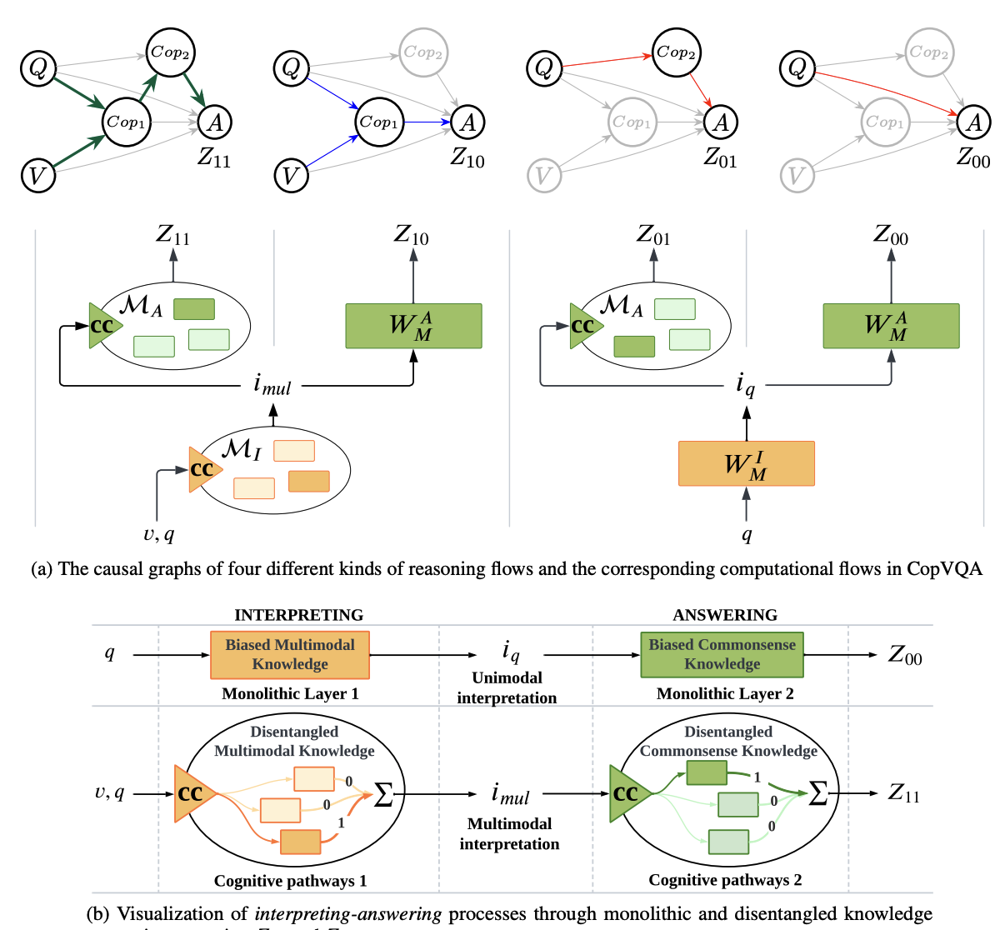
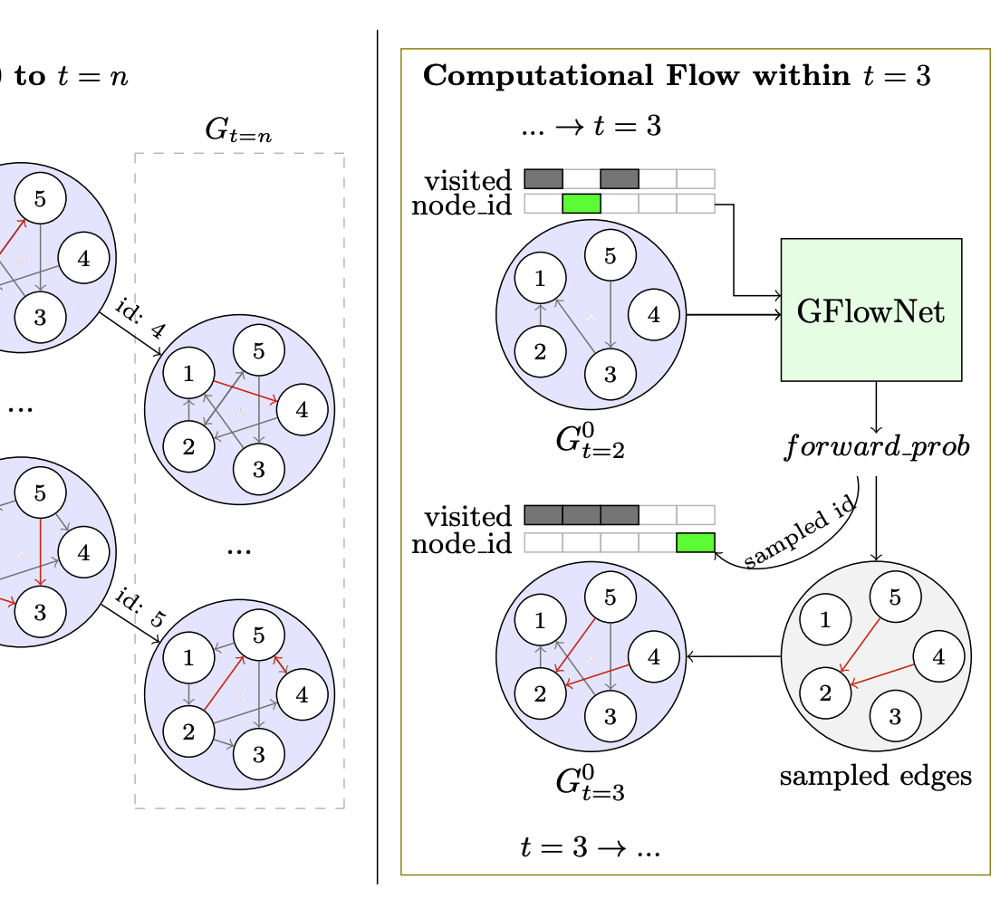
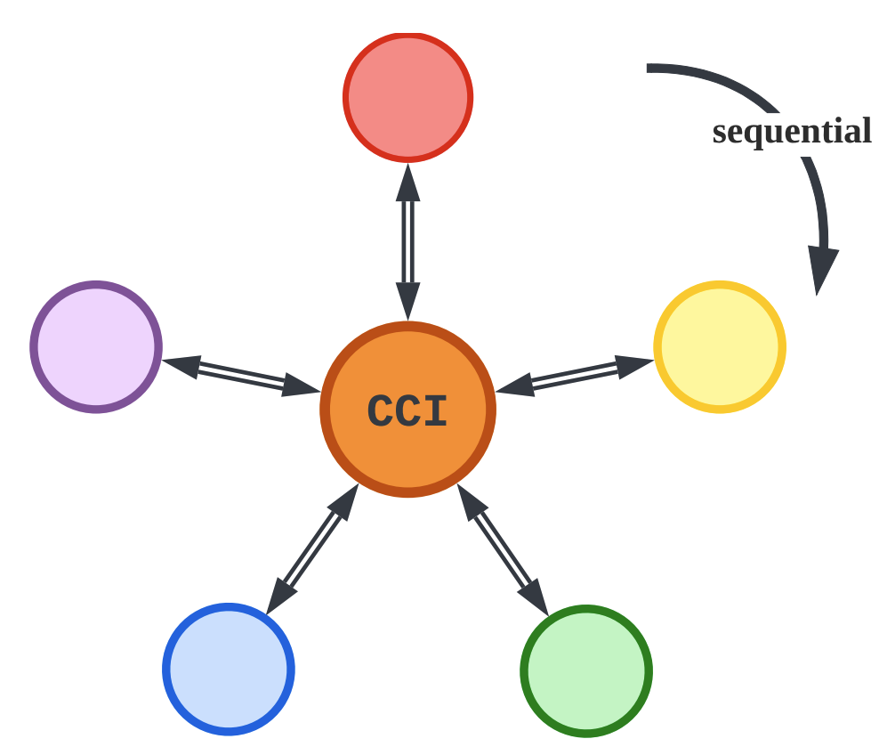

Bailey Trang Nguyen
Nguyen Ngoc Phuong Trang
Bailey Trang Nguyen is a first-year PhD student in Computer Science at Stanford University, affiliated with the Department of Psychiatry and Behavioral Sciences, Stanford School of Medicine. She is part of the Stanford Artificial Intelligence Laboratory (STAI Lab), advised by Prof. Ehsan Adeli and Prof. Fei-Fei Li. Her research focuses on Causal AI in general and its applications in medicine, particularly on counterfactual reasoning and discovery in mental health and psychiatric care.
Prior to joining Stanford, Bailey was a Research Assistant at the National University Health System (NUHS) at CogAI4Sci Lab in Singapore, advised by Prof. Dianbo Liu. She also interned at the Mila Institute in Canada, supervised by Prof. Yoshua Bengio and Prof. Dianbo Liu.
Bailey completed her undergraduate studies at the Vietnam National University - Ho Chi Minh City University of Science (VNU-HCMUS) in Vietnam, advised by Thao-Nhi Tran and her Master's studies at the Tokyo Institute of Technology (Tokyo Tech) in Japan, supervised by Prof. Naoaki Okazaki.



